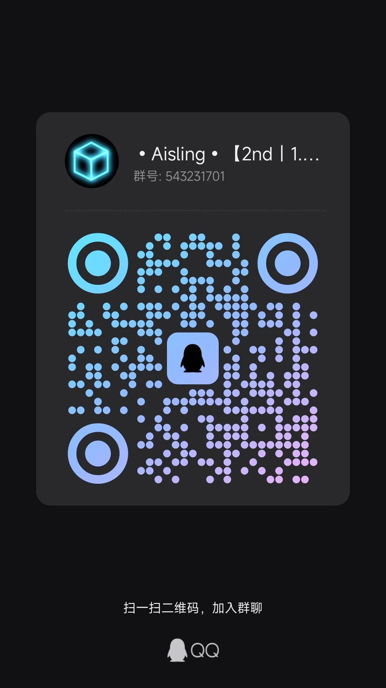

连接到服务器
使用Java版 加入（推荐）
ip地址：由于安全需要以及不定期变换，ip地址进群获取。详见 加入QQ群 部分
版本要求：与服务器版本匹配。
注：自 2nd+ 开始，不再支持跨版本。若需跨版本，请自行使用ViaFabric Plus模组。
加入QQ群
群内会发布更新公告、服务器动态等。同时也是服主的老巢。
群号：543231701
注意：若从这里进群，进群问题填写“文档”即可。

最后编辑于2026年7月7日
